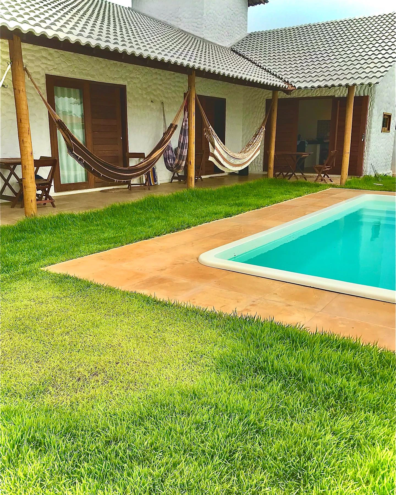

✺ BARRA GRANDE, PIAUÍ
Dias leves.
Boas companhias.
Uma vila para vocês.
Reúna quem você gosta e venha desacelerar. Um chalé para famílias e grupos de até 12 pessoas, com piscina, conforto e espaço para aproveitar juntos.
Consultar datas e valoresAté 12 hóspedes · 3 suítes · Piscina

E CALMA ✺
03 suítes
Até 12 hóspedes
Cozinha completa
Piscina e área externa
A SUA PRÓXIMA PAUSA
Espaço para reunir.
Tempo para aproveitar.
Na Vila Carioca BG, os dias convidam a ficar mais um pouco. Entre um mergulho na piscina e uma conversa na área externa, aproveite a companhia da família ou dos amigos.
São três suítes, com capacidade para até quatro pessoas em cada, e uma cozinha completa para deixar a estadia do seu grupo mais prática.
ACOMODAR SEU GRUPO
DO LADO DE DENTRO
Um cantinho para
descansar de verdade.
Depois de aproveitar Barra Grande, nada como voltar e se sentir à vontade. Conheça os ambientes que vão receber você e sua companhia.
- 3 suítes
- Com banheiro em cada uma
- Até 4 hóspedes por suíte
- Capacidade total de até 12 pessoas
UM POUCO DA VILA
Imagine seus dias aqui.
Fotos reais, por dentro e por fora.
Escolha um ambiente e toque para ampliar.
8 fotos
▶ Faça um passeio em vídeo pela Vila +
COMECE A PLANEJAR
Seu próximo descanso
começa com uma conversa.
Conte quando você quer vir e quem vem com você. Vamos levar os detalhes para o nosso atendimento no WhatsApp.
01 Escolha as datas e o grupo
02 Envie a consulta pelo WhatsApp
03 Combine o valor e confirme sua reserva
Barra Grande.
NOS ENCONTRAMOS AQUI
Um destino para
guardar na memória.
Estamos em Barra Grande, no município de Cajueiro da Praia, no litoral do Piauí.
Ver a localização no Google Maps Acompanhe @vilacariocabgANTES DE FAZER AS MALAS
Algumas respostas para sua viagem.
Quantas pessoas a Vila acomoda?+
A Vila Carioca BG tem 3 suítes com capacidade para até 4 hóspedes cada, acomodando até 12 pessoas no total.
Como recebo meu orçamento?+
Preencha as datas e a quantidade de hóspedes no formulário. Ao continuar, o WhatsApp abrirá com esses detalhes. Envie a mensagem para receber o valor e consultar a disponibilidade com o atendimento.
O envio da consulta garante minha reserva?+
A consulta é o primeiro contato. A reserva só estará confirmada após combinar disponibilidade, valores e condições diretamente com o atendimento.
Como consultar horários, pets e outras condições?+
Converse com o atendimento pelo WhatsApp para confirmar horários de entrada e saída, regras para pets e demais condições antes de reservar.